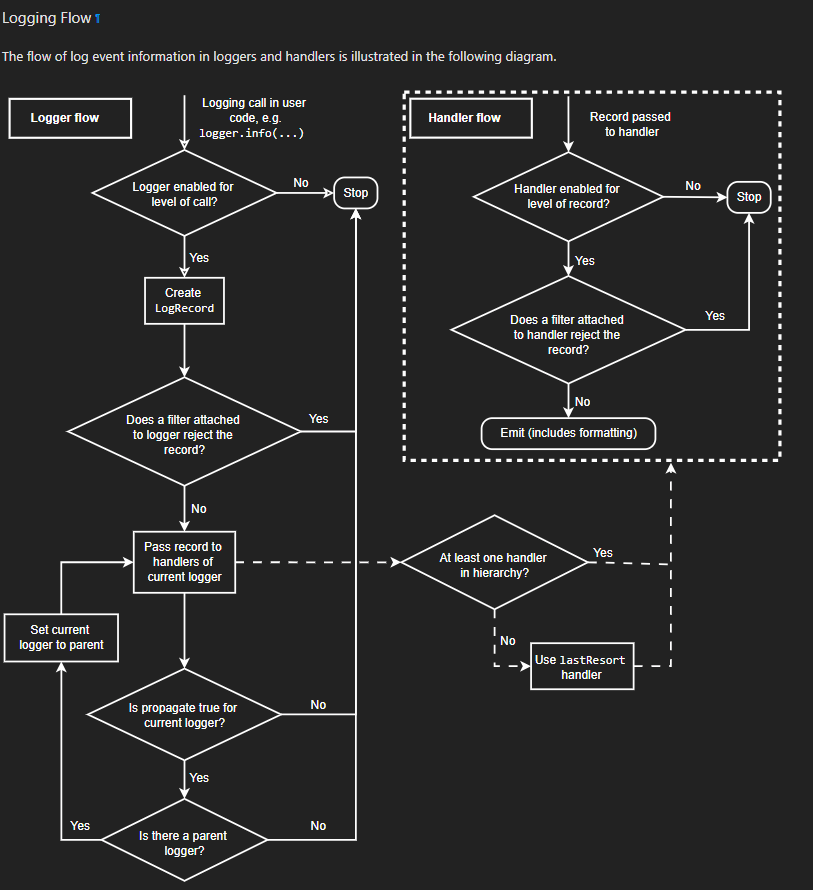

Python Logging Guide
Introduction
This is an intermediate level guide, written for people who may not have experience in logging, but have some experience with Python, object oriented programming and package development. This guide will discuss the logger module in Python specifically, and the suggested practices for implementing logging when developing packages at UASAL.
Users are encouraged to look at the Logging HOWTO tutorial on the Python website. If you have already been there and there is way too much information, and you would like a streamlined version of logging for your needs, this guide will reproduce some material from the tutorial, and add additional guidelines and suggestions specifically for UASAL package development.
Basic Usage
To get started with logging, the user needs to add a logger to their UASAL package/script. This output will go to the terminal. The options to change where the output logs go is discussed further in the Where do the log messages go? Section. The basic logger usage is fairly straightforward and can be seen in the Basic Logger Code
import logging
logger = logging.getLogger(__name__)
# Test log statements
logger.debug("Testing log debugs")
logger.warning("Testing log warnings")
logger.info("Testing log info")
logger.error("Testing log errors")
logger.critical("Testing log criticals")
The workflow is to import a logger, and use the logger to log messages. The logger recognizes the pre defined set of levels, which are also function calls for specific messages.
Why not print?
A really simple question to ask is: Why do I want to use a logger and not simply print statements in my code?
This is a reasonable question and the answer depends on your use case. There are logistical and scientific reasons for logging instead of printing. If you are managing a relatively simple script, maybe a print statement is in fact the best way to go. But, if you are working with a complicated package, peppering the code with print statements to debug a problem has three main issues:
Cleanup overhead - you probably have to go back and comment out most statements as you will not want them once the code starts to work.
Lack of context - a print statement does not contain information the originating method, line of code, date, time that triggered it etc, unless explicitly specified.
Noise when debugging - a large number of print statements is often redundant when debugging, since we are usually interested in the last few statements before something breaks, requiring the user to sift through a number of print statements to identify the important one.
Loggers are a strong way of circumventing these problems:
They support log levels (DEBUG, INFO, WARNING, ERROR, etc.), so you can control the verbosity without modifying your code.
They can be configured to automatically include timestamps and source information as needed.
You can direct their output to multiple destinations (console, files, remote systems) and format it consistently.
Additionally, there is a strong reason from a scientific point of view to use logging as well for transparency, traceability and reproducibility of results. When logs are well-placed and informative they act as a lab-book for the data / results generated by the code.
Logger Levels
Logger levels essentially quantify “How badly do I, the user, need to know this information?” The levels are numeric values, but are also associated with predefined keywords chosen on the basis of shared practical experience. Here’s the list (Emphasized text is taken verbatim from the logging guide) -
Critical (Logger level numeric value - 50) - The user absolutely needs to know about this. A serious error, indicating that the program itself may be unable to continue running.
Error (Logger level numeric value - 40) - The user should be told about this at runtime. Due to a more serious problem, the software has not been able to perform some function.
Warning (Logger level numeric value - 30) - This may or may not be something the user needs to know, as the software didn’t break, for now. An indication that something unexpected happened, or indicative of some problem in the near future (e.g. ‘disk space low’). The software is still working as expected.
Info (Logger level numeric value - 20) - This just gives user regular updates about the software which is running as expected. Confirmation that things are working as expected.
Debug (Logger level numeric value - 10) - Detailed information, which the user almost never wants, and is typically useful for the code maintainers/designers. Detailed information, typically of interest only when diagnosing problems.
A special note on the log.warning() keyword. Python has an additional package called warnings which also contains the warnings.warn() method, utilized frequently by packages. The distinction between the use of these packages is completely dependent on the package designer, BUT it is advisable to follow the following convention: `warnings.warn()` in library code if the issue is avoidable and the client application should be modified to eliminate the warning. A logger’s `log.warning()` method if there is nothing the client application can do about the situation, but the event should still be noted.
Now if we go back to our printing problem, we can instead replace them in the code with logger.debug() statements instead, which will only be printed when the logger itself is configured to print out debug messages. Once the problem is solved, we can leave the logging code in there, and simply switch the logger to an information only mode. No more commenting back and forth!
Intermediate/Advanced Usage
A standard logger workflow is illustrated in the following flowchart -

While convenient to quickly use the logger defined above in a short script, when developing a package, one may find it useful to define a separate logger class to be used by the package with a number of pre-set default values that configure the logger.
What is a log handler?
A log handler is a special method that contains a predefined set of functions to parse the log into various formats. There are a large number of pre defined handlers, some of the more commonly used examples are StreamHandler to manage logs into system streams such as stdout, FileHandler to handle basic file read/write functions, TimedRotatingFileHandler a slightly more advanced file handler that periodically rotates/wipes log files and runs maintanence tasks, and lastly, NullHandler which does nothing with error messages and is useful when you want to retain your logging architecture and messages, but don’t want to actually log anything, and is also useful in bypassing certain error messages.
Simple example to set up a file handler
import logging
logger = logging.getLogger()
fh = logging.FileHandler(filename=<LOGFILE_NAME>, mode='a', encoding='utf-8', delay=False, errors=None)
fh.setLevel(logging.DEBUG) # Sets the level you want to be recorded within the log file
logger.addHandler(fh)
How to format the log messages?
Users can format their messages to customize exactly what information is logged and how it is formatted. A basic code snippet for formatting is
import logging
logging.basicConfig(format='%(levelname)s:%(message)s', level=logging.DEBUG)
The other way is to set the formatter for a specific handler
import logging
logger = logging.getLogger()
format="%(asctime)s - %(pathname)s[line:%(lineno)d] - %(levelname)s - %(message)s", # Format for log messages
formatter = logging.Formatter(format)
# To set the format for a specific handler
ch = logging.StreamHandler()
ch.setFormatter(formatter)
logger.addHandler(ch)
Note that the log we get from the getLogger method is the Root logger, and does not have the setFormatter method.
The keywords accepted by the log formatter (levelname, message, etc..) are called the LogRecord attributes and a complete list of these can be found here.
Where do the log messages go?
This depends on the handler and the general setup. If you boot up a standard Python console, this is the result of the log commands
>>> import logging
>>> logger = logging.getLogger()
>>> logger.debug("Testing log debugs")
>>> logger.warning("Testing log warnings")
Testing log warnings
>>> logger.info("Testing log info")
>>> logger.error("Testing log errors")
Testing log errors
>>> logger.critical("Testing log criticals")
Testing log criticals
So the default behavior is to print everything above a warning to screen. If you haven’t configured a FileHandler, none of this gets saved to a log file. You can change the output here by changing the level of your root logger. You can save all of this information to a file by configuring and adding a FileHandler.
Root Logger Level, Handler Level and throughput
Loggers are effectively a chain of communication. The chain starts with the logger object, which then usually hands it off to one of the Handlers, or multiple handlers. The important thing to note is that ALL OF THESE OBJECTS CAN SET THEIR OWN LEVEL. In these circumstances, it is advisable to set the root logger’s default level as Debug, so that all logged messages are passed on to the handlers. The handler levels can then be set to filter out a certain set of messages. For example, in this setup
logger = logging.getLogger()
logger.setLevel(DEFAULT_LEVEL) # Sets the lowest level allowed for all logger handlers
formatter = logging.Formatter(format)
# Setup Handlers -------------------------------------------------
## Writes to the Stream / Setup Format
ch = logging.StreamHandler()
ch.setLevel(STREAM_LEVEL) # Sets the level you want to be output to the terminal / stream
ch.setFormatter(formatter)
## Writes to a log file using FileHandler (basic handler)
fh = logging.FileHandler(filename=DEFAULT_LOGFILE, mode='a', encoding='utf-8', delay=False, errors=None)
fh.setLevel(FILE_LEVEL) # Sets the level you want to be recorded within the log file
fh.setFormatter(formatter)
# Add Handlers
logger.addHandler(fh)
logger.addHandler(ch)
We have a DEFAULT_LEVEL for the root logger, an INFO level for the StreamHandler, which outputs logs to the screen, and a DEBUG level for the FileHandler. Now, as written, all logs will go to the file but only INFO and above will be shown on screen. However, in this case if we change the DEFAULT_LEVEL to INFO, now the root logger no longer accepts/logs DEBUG messages, and even though the FileHandler is configured to accept DEBUG messages, no such messages are coming from Root, and thus no DEBUG messages will be seen in the written log!
It is a game of communication, and if we bottleneck an earlier step in the chain to reject a certain level of messages, they will not propagate down the line!
Guidelines for use of loggers in notebooks/scripts
Once the loggers have been set up using a dedicated class for the entirety of the package, they can be called individually. For example, if we import package1 and package2, which both have a .log attribute, containing a logger object, then individual loggers can be manipulated by calling logging methods for the package1.log and package2.log objects.
The notebook/script can have its own dedicated logger object, which can be specified in a similar manner to that for the package above by importing a class, or by defining a logger explicitly from within the script/notebook including the corresponding format and handlers.
Basic Logger Code Example
# Example logger import / setup statements
# To be added within the script you are running
from package-name.logger import Logger # Replace package-name with the python package name
# Logger setup / call (min setup / uses defaults in logger.py)
log = Logger(__name__)
# Logger setup Example w/changes to default values
## This changes the overall base min level for stream & logging to messages that are
## at the warning level and above and change the log output file name
log_test = Logger("test-case",level='warn',log_file='log_test.log')
# Test log statements --------------------------------------------------------------
print("Running logger example with log setup that uses default values from class...")
print("Should output logs >= info, output to package-name.log for logs >=debug")
log.debug("Testing log debugs")
log.warning("Testing log warnings")
log.info("Testing log info")
log.error("Testing log errors")
log.critical("Testing log criticals")
# Test log_test statements
print("Running logger example with log_test setup with adjust values from class...")
print("Messages that are above warn should be shown below and output to log_test.log")
log_test.debug("Testing log debugs")
log_test.warning("Testing log warnings")
log_test.info("Testing log info")
log_test.error("Testing log errors")
log_test.critical("Testing log criticals")
# Examples of adjusting levels for logger after initializing -----------------------
print("Demonstrating methods for changing file and stream levels for logger...")
log_test.editFileLevel('crit') # Change min file level required for outputs
log_test.editStreamLevel('debug') # Change min level for recording to stream/console
# Note: Since the min base level for the same logger was set to a level above the stream level,
# it will still only show messages that are above the 'warn' level for the logger.
print("Running logger example with log_test setup w/mid line changes to logger values...")
print("Console should only show message >='info' & record to log_test.log at 'crit' level")
log_test.debug("Testing log debugs")
log_test.warning("Testing log warnings")
log_test.info("Testing log info")
log_test.error("Testing log errors")
log_test.critical("Testing log criticals")
# Remove log testing statements / only need the import and initial log = Logger(__name__)
# Other lines are for additional examples / test examples if running with logger.py locally
Custom logger class
Here we outline the suggested practice if one decides to incorporate a custom logger into a UASAL package. Given your package tree
├── docs
├── notebooks
│ ├── sample_notebook.ipynb
├── pyproject.toml
├── README.md
├── src
│ ├── package_name
│ │ ├── source_code.py
│ │ ├── __init__.py
│ │ ├── packaged_directory
│ │ │ └── data.csv
│ │ └── _version.py
└── tests
└── test.py
Create a new file logger.py in the src/package_name directory. Inside this file, add the following code block.
# Example Logger Class for Python
# Refer to https://docs.python.org/3/library/logging.html for more information on loggers
import logging
# Variable defaults for Logger Class
DEFAULT_LOGFILE = 'package-name.log' # Optional / Use `package-name.log` naming convention when possible
DEFAULT_LEVEL = 'debug' # Min level for logger to use for log handlers
STREAM_LEVEL = 'info' # Min Level for the log stream handlers
FILE_LEVEL = 'debug' # Min level for recording to file
class Logger(logging.Logger):
# Level relations / quicker reference
levels = {
'debug': logging.DEBUG,
'info': logging.INFO,
'warn': logging.WARNING, # Supporting user input for old and new format
'warning': logging.WARNING, # Supporting user input for old and new format
'error': logging.ERROR,
'crit': logging.CRITICAL,
'critical': logging.CRITICAL, # Catching potential user error case
}
def __init__(
self,
name,
level=DEFAULT_LEVEL, # Used to set the base min level for logging
stream_level=STREAM_LEVEL, # Level for console reporting
file_level=FILE_LEVEL, # Level for printing to log file
log_file=DEFAULT_LOGFILE, # Log File output name
format="%(asctime)s - %(pathname)s[line:%(lineno)d] - %(levelname)s - %(message)s", # Format for log messages
):
super().__init__(name)
self.setLevel(self.levels.get(level)) # Sets the lowest level allowed for all logger handlers
formatter = logging.Formatter(format)
# Setup Handlers -------------------------------------------------
## Writes to the Stream / Setup Format
self.ch = logging.StreamHandler()
self.ch.setLevel(self.levels.get(stream_level)) # Sets the level you want to be output to the terminal / stream
self.ch.setFormatter(formatter)
## Writes to a log file using FileHandler (basic handler)
self.fh = logging.FileHandler(filename=log_file, mode='a', encoding='utf-8', delay=False, errors=None)
self.fh.setLevel(self.levels.get(file_level)) # Sets the level you want to be recorded within the log file
self.fh.setFormatter(formatter)
# Add Handlers
self.addHandler(self.fh)
self.addHandler(self.ch)
def editStreamLevel(self, level):
self.ch.setLevel(self.levels.get(level))
return print(f'Changed stream / console logger level to',level,'...')
def editFileLevel(self, level):
self.fh.setLevel(self.levels.get(level))
return print(f'Changed file / logging level to',level,'...')
Modify the default parameters to suit the needs of your package. Once this has been added, inside the source_code.py file, add
from logger import logger
class foo:
def __init__(self):
self.log = logger()
When importing a package that implements its own custom logger, the logger is automatically referenced as foo.log and all logging methods can be used with this object.